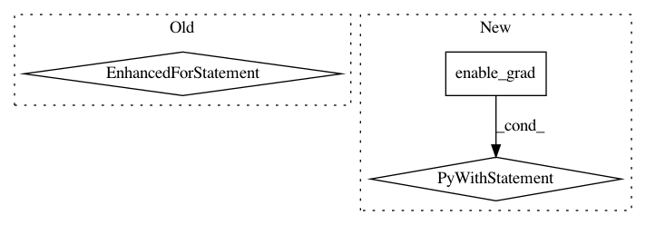

303217b34070dc47a86622b62764098999b0d7f5,gpytorch/lazy/lazy_tensor.py,LazyTensor,_quad_form_derivative,#LazyTensor#Any#Any#,378
Before Change
loss.requires_grad_(True)
grads = torch.autograd.grad(loss, args, allow_unused=True)
for i, arg in enumerate(args):
if toggled[i]:
arg.requires_grad = False
return grads
def _preconditioner(self):
After Change
return tuple(None for _ in args)
// Normal case: we"ll use the autograd to get us a derivative
with torch.autograd.enable_grad():
loss = (left_vecs * self._matmul(right_vecs)).sum()
loss.requires_grad_(True)
actual_grads = deque(torch.autograd.grad(loss, args_with_grads, allow_unused=True))
// Now make sure that the object we return has one entry for every item in args
grads = []
for arg in args:
if arg.requires_grad:
grads.append(actual_grads.popleft())
In pattern: SUPERPATTERN
Frequency: 3
Non-data size: 3
Instances
Project Name: cornellius-gp/gpytorch
Commit Name: 303217b34070dc47a86622b62764098999b0d7f5
Time: 2018-12-12
Author: gpleiss@gmail.com
File Name: gpytorch/lazy/lazy_tensor.py
Class Name: LazyTensor
Method Name: _quad_form_derivative
Project Name: facebookresearch/Horizon
Commit Name: 2a548989f90026395d3d47ccf15ac331728c64bf
Time: 2019-06-22
Author: jjg@fb.com
File Name: ml/rl/training/dqn_trainer.py
Class Name: DQNTrainer
Method Name: calculate_cpes
Project Name: pytorch/pytorch
Commit Name: f364e492dfb287e4043d37fffa1bcef55e2ac5dd
Time: 2021-03-11
Author: ilqarramazanli@gmail.como
File Name: torch/autograd/functional.py
Class Name:
Method Name: jacobian